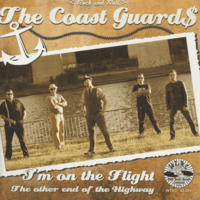

The Coast Guard$ - I'm On The Flight / The Other End Of The Highway (Single, 2014)
01 - I'm On The Flight (4:21)
02 - The Other End Of The Highway (2:47)
© WTRC :: [45-001]
Notes
Germany.
Released on Wild Turtle Record Company (WTRC) as bundle of 7" Vinyl with two songs, CD with two songs and one videoclip (I'm On The Flight)
"I'm On The Flight" is written by Stefan Meinecke
"The Other End Of The Highway" is written by Tom Toxic
reference information: Discogs®
Review
042/366 (Project 366)
Two wonderful tracks in Modern Rock'n'Roll style with elements of Rockabilly, Folk and Country music. And with an original punky and brushy mood. "I'm On The Flight" is more tragic and with a somewhat gruff vocals. A bit of a ballad, a bit of Modern Folk Rockabilly. Nice guitar solos, a little rustic singing manner. "The Other End Of The Highway" is more melodious and with a pretty catchy tune. Both with very good sound and a little scrumpy tone. Songs with bunch of gems, flavours and pearls. I like this. A bit like an alternative approach to tough Rockabilly and general Punk'N'Roll.